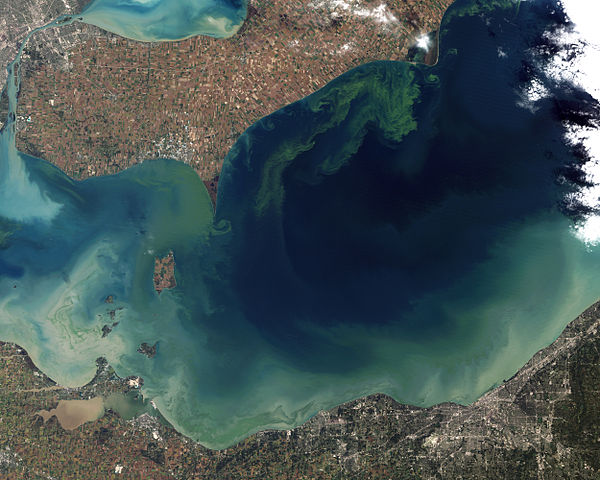

pH-dependence on added contaminants in water
Contents
pH-dependence on added contaminants in water#
Written by Svetlana Kyas (ETH Zurich) on Mar 31th, 2022
This tutorial shows how to model the dependence of pH on various contaminants in the water (which affect both fish life and the general ecosystem) in Reaktoro.
In the image below, we see the green scum that represents the worst algal bloom Lake Erie (North America) has seen in decades. The photo was taken in October 2011 from the orbit of the Landsat-5 satellite. This happened due to record-breaking torrential rains in the spring that washed fertilizer into the lake and spurred the growth of the microcystin-producing cyanobacteria bloom.
 |
|---|
Toxic algae bloom in the Lake Erie, Source: NASA Earth Observatory |
First, the chemical system is set up with a single aqueous phase (governed by the HKF activity model) and the chemical state corresponding to pure water (with pH = 7) is initialized.
from reaktoro import *
import pandas as pd
# Define the thermodynamic database
db = SupcrtDatabase("supcrt98")
# Define the aqueous phase
aqueousphase = AqueousPhase(speciate("H O Na Cl N"))
aqueousphase.setActivityModel(ActivityModelHKF())
# Define the chemical system:
system = ChemicalSystem(db, aqueousphase)
# Define the chemical state corresponding to the pure water
state = ChemicalState(system)
state.setTemperature(25, "celsius")
state.setPressure(1.0, "bar")
state.set("H2O(aq)", 1.0, "kg")
# Define the equilibrium solver and solve the equilibrium problem with the initial chemical state
solver = EquilibriumSolver(system)
solver.solve(state)
# Define aqueous properties of the chemical state
aprops = AqueousProps(state)
print("pH of pure water = ", aprops.pH())
pH of pure water = 6.99756
Adding acidic contaminant or decreasing pH#
First, we study the behavior of the pH when the acidic contaminant is added to the water. We define the auxiliary lists with the amounts of the acid HCl in the chemical state hcl_amounts. In the 50 steps, we gradually add 0.1 mmol of hydrogen chloride and evaluate the pH in the obtained state, which is collected in the pandas.DataFrame.
# Initialize lists with HCl amounts and ph values
hcl_0 = 0.0
hcl_delta = 0.1
nsteps = 50
# Define dataframe and initialize it with the first values oof HCl and pH
pd1 = pd.DataFrame(columns=["amount_HCl", "pH"])
pd1.loc[len(pd1)] = [hcl_0, float(aprops.pH())]
for i in range(nsteps):
# Add an increment of hydrogen chlorite to the state
state.add("HCl(aq)", hcl_delta, "mmol")
# Equilibrate state with updated problem
solver.solve(state)
# Update aqueous properties
aprops.update(state)
# Update amount of HCl
hcl_0 += hcl_delta
# Append new calculated value to the dataframe
pd1.loc[len(pd1)] = [hcl_0, float(aprops.pH())]
Adding ammonia or increasing pH#
The addition of a chemical contaminant such as ammonia (a compound of nitrogen and hydrogen with the formula NH3, a colorless gas with a characteristic pungent odour) can increase pH and affect fish life.
state = ChemicalState(system)
state.setTemperature(25, "celsius")
state.setPressure(1, "bar")
state.set("H2O(aq)", 1.0, "kg")
solver.solve(state)
aprops.update(state)
nh3_0 = 0.0
nh3_delta = 0.1
nsteps = 50
pd2 = pd.DataFrame(columns=["amount_NH3", "pH"])
pd2.loc[len(pd1)] = [nh3_0, float(aprops.pH())]
for i in range(nsteps):
# Add an increment of ammonia to the chemical state
state.add("NH3(aq)", nh3_delta, "mmol")
# Equilibrate state with updated problem
solver.solve(state)
# Update aqueous properties
aprops.update(state)
# Update the amount of NH3
nh3_0 += nh3_delta
# Append new calculated value to the dataframe
pd2.loc[len(pd2)] = [nh3_0, float(aprops.pH())]
Plotting the pH dependencies#
We use the bokeh plotting library to plot pH as a function of the added HCl and NH3(aq) amounts.
from bokeh.plotting import gridplot, figure, show
from bokeh.models import HoverTool, Legend
from bokeh.io import output_notebook
output_notebook()
# ----------------------------------- #
# Plot dependence of pH on added HCl
# ----------------------------------- #
hovertool1 = HoverTool()
hovertool1.tooltips = [("pH", "@pH"), ("amount(HCl)", "@amount_HCl mol")]
p1 = figure(
title="DEPENDENCE OF PH ON HCL AMOUNT",
x_axis_label=r'HCL [MOL]',
y_axis_label='PH [-]',
sizing_mode="scale_width",
plot_height=300)
p1.add_tools(hovertool1)
r11 = p1.line("amount_HCl", "pH", line_width=3, line_cap="round", line_color='darkred', source=pd1)
r21 = p1.circle("amount_HCl", "pH", line_width=2, size=6, line_color='darkred', fill_color='darkred', source=pd1)
legend = Legend(items=[
("pH" , [r11, r21]),
], location="top_right")
p1.add_layout(legend, 'right')
# ----------------------------------- #
# Plot dependence of pH on added NH3+
# ----------------------------------- #
hovertool2 = HoverTool()
hovertool2.tooltips = [("pH", "@pH"), ("amount(NH3)", "@amount_NH3 mol")]
p2 = figure(
title="DEPENDENCE OF PH ON NH3(aq) AMOUNT",
x_axis_label=r'NH3 [MOL]',
y_axis_label='PH [-]',
sizing_mode="scale_width",
plot_height=300)
p2.add_tools(hovertool2)
r21 = p2.line("amount_NH3", "pH", line_width=3, line_cap="round", line_color='teal', source=pd2)
r22 = p2.x("amount_NH3", "pH", line_width=2, size=8, line_color="teal", source=pd2)
legend = Legend(items=[
("pH" , [r21, r22]),
], location="top_right")
p2.add_layout(legend, 'right')
grid = gridplot([[p1], [p2]])
show(grid)
As expected, adding a contaminant like HCl into water increases free H+ ions and decreases pH according to the reaction
affecting the ecosystem. Whereas adding ammonia removes H+ from water to produce ammonium and hydroxide, i.e., to produce ammonium and hydroxide: